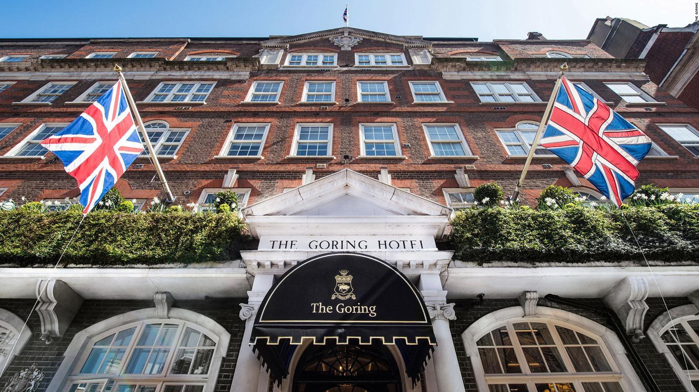

MENU
LANDMARKS

- Big Ben
- London Eye
- Hyde Park
- Buckingham Palace
- Notting Hill
- London Bridge
FOOD

- Wild Thyme
- Sushi Tetsu
- Duck and Waffle
- The Golden Chippy
- Bloomsbury Street Kitchen
HOTELS
- Rubens at the Palace
- The Savoy
- St. Ermin's Hotel
- The Stafford Hotel
- The Lanesborough
HIDDEN GEMS

- Neal's Yard
- Saint Dunstan in the East
- Spitalfields and Brick Lane
- Little Venice
- The Painted Hall
Frequently Asked Questions
| Best Time to Visit? | Prices? | Traveling Necessities? |
|---|---|---|
| Spring time; primarily March | Relatively cheap; higher during holiday seasons | Make sure you have an updated passport and/or visa |